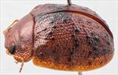
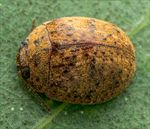
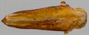
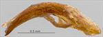
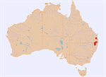
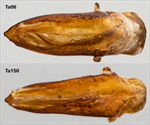

Click on images to enlarge


Male, Gibraltar Range, N.E. New South Wales


Male, Boonoo Boonoo, N.E. New South Wales


Aedeagus, dorsal view (Gibraltar Range, N.E. New South Wales)


Aedeagus, lateral view (Gibraltar Range, N.E. New South Wales)


Distribution


Dorsal surface of aedeagus of Ta06 and Ta150
Name
Trachymela sp. Ta150
Reference specimen
2000-530, Gibraltar Range, NE New South Wales.
Adult Description
Length: ♂ 5.5–5.9 mm (n=4), ♀ 5.7–6.5 mm (n=3).
Colouration:
- Head: uniformly mid-brown with dark brown or black-tipped mandibles; antennomeres 1–4 straw-brown, 5–11 usually concolorous, sometimes grading fractionally darker towards apex, if so, often only lateral and/or distal edges of the darker shade.
- Pronotum: brown, concolorous with or fractionally darker than head, often with vague, wispy, slightly darker infuscations.
- Scutellum: brown, concolorous with adjacent region of pronotum, broadly edged in a slightly or considerably darker shade of brown.
- Elytra: brown, concolorous with pronotum, the disc is scattered with small to moderate-sized, wart-like elevations that are usually black but may be lighter in colour anterior to antero-median depression, punctures usually most concentrated just posterior to antero-median depression where they sometimes coalesce laterally to form a rough transverse dark region, suture from scutellum to greatest height sometimes broadly black; punctures are concolorous with or a fractionally darker shade than interstices, humeral callus concolorous with surrounding area.
- Venter & Legs: light- to mid-brown with legs of a concolorous shade.
- Cuticular Wax: light-brown to orange-brown, coverage relatively even throughout or slightly more concentrated in antero-median depression of elytra and near elytral apex, with sometimes a very faint pale brown streak present along VR3.
Morphology:
- Head: punctures moderately large (pd ≈ 1.5–2× ef) and quite evenly to slightly unevenly and quite densely distributed. Antennae short, particularly in females (AL/BL: ♂ 41–43%, ♀ 31–33%), filiform, outer antennomeres noticeably compressed.
- Pronotum: almost evenly curved transversely, foveal depression very shallow or (rarely) absent, with epidermis elevated in a rounded pustule near its centre, discal area with surface smooth, rarely slightly uneven and puncturation clearly impressed, evenly distributed and quite dense (spacing ≈ 2pd), becoming much coarser at lateral margins, some very much finer punctures are scattered among the larger ones, though difficult to discern. Front margins join lateral margins in a smoothly rounded right-angle, with lateral margin initially straight for about 20% of length before curving smoothly and gradually towards rear margin.
- Scutellum: surface usually smooth and nitid, sometimes rougher in texture, unpunctured.
- Elytra: surface unevenly curved with a shallow but distinct broad depression extending from just below elytral summit towards the discal margin, punctures distinct and relatively large, closely spaced and evenly distributed over anterior two-thirds of surface, surface more granular in posterior third, with a very sparse scatter of much smaller punctures on the interstices, a number of small to moderate-sized smooth, elevated verrucae, usually much darker than surrounding surface (often black), scattered about the surface, three groups of these usually present, one group (sometimes quite inconspicuous) in the area between the humeral callus and elytral suture and transverse depression, a second group, usually the most prominent, aligned roughly along the posterior edge of depression, while a third consists of more isolated verrucae in posterior half of disc, VR2 is almost invariably composed of a line of evenly spaced verrucae in posterior half, surface adjacent to scutellum often elevated, surface continuous under humeral callus. Vertical extension of epipleura considerable (HCE/PW = 0.33–0.38).
- Venter: prosternal process almost parallel, lightly closed or open anteriorly, setae present only at posterior extreme of prosternal process, 1 long seta each on anterior, median and posterior trochanters; front edge of metaventrite beveled, slightly rounded; inner edge of posterior of epipleura lacking setae.
Male Genitalia (Aedeagus):
- Dimensions: very small (LPE = 22–25% BL), lanceolate.
- Dorsal view: shaft broadest at junction with basal section, from where sides converge very gradually towards apex, the angle of convergence becoming fractionally shallower by about 25% of distance from apex where sides are almost parallel and where the convergence then suddenly becomes sharper, dorsal surface smoothly curved with dorso-median channel present for most of length, tip very slightly protruding, ostium small, oval.
- Lateral view: shaft almost evenly and quite lightly curved throughout its length, thinning almost imperceptibly towards apex before ostium, tip slightly deflexed.
Immature Stages
Unknown.
Similar species
- Ta06: These two species are almost impossible to differentiate using external morphology – the aedeagus of Ta150 is of a similar size but, viewed dorsally, it decreases in width from much closer to the basal sulcus than that of Ta06 (shown for comparison in the illustration, though rare intermediate forms do exist); the elytral verrucae of Ta150 are usually darker, larger and often more densely distributed. The pattern of cuticular wax in Ta150 is much more uniform in colour and density, with any longitudinal streaks quite inconspicuous, whereas two colours are present in individuals of Ta06 – greyish in the antero-median depression and apical region of elytra and brown elsewhere. The elytral marginal area is broader in Ta06 (HCE/PW > 0.39) than Ta150 (HCE/PW < 0.38), with essentially no zone of overlap.
- Ta19: This species is larger on average, though there is some overlap, and its aedeagus is of a similar shape as that of Ta150 but is much larger proportionally. Otherwise, there is little to reliably tell them apart.
Notes
- Taxonomy: This species is very close to Ta06, and individuals, particularly females, can be difficult to distinguish.
- Host Associations: Host records for Ta150 include unidentified, mostly smooth-barked Eucalyptus species (as well as one record from a box-barked eucalypt). It is possible that this species utilizes a different suite of hosts to Ta06, but more specific host records are needed to confirm this.
- Morphological Variation: A specimen [25-052712] from Eden Creek Falls, NE New South Wales, is smaller and higher than a typical Ta150 and its elytra are more ruggedly sculptured than is the norm for this species and it is likely misplaced here.
Copyright © 2026. All rights reserved.